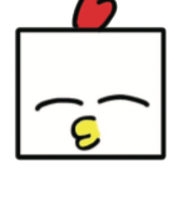

TBT OFFICIAL MASCOT / OUR FLIGHT LOG
あ、来た。こっち。
ギィ……格納庫のシャッターが開く。
奥から工具の音と、誰かの足音がする。

工具箱のかげに、誰かいた。
その頭、
四角いね。
「このつなぎ？ 作業用。空を飛ぶ準備をしてたんだ。
……あ、そのネジ、踏まないで。」
 TOBITO-KUN
TOBITO-KUN
※ このページの性格・物語の描写はサイト内のキャラクター設定を含みます。
風向きが、
変わった。
床に、古い写真が落ちている。
これ、
いつの写真？
めくってみると、変なポーズばかり。
どれかに秘密が隠れている……かもしれない。
01 / 03
飛行機ポーズ
両腕をいっぱいに広げて、飛行機みたいに。空への憧れをそのままポーズにしました。
誰かが実験装置の電源を入れっぱなしにした。
ちょっと、
試運転。
元のフライトゲームとやきとり脱出を、
このページの中でそのまま遊べるようにした。
空を飛ぶか。
焼き鳥になるか。
旧サイトのゲームエンジンを移植。
新サイトを離れずに遊べます。
操縦席へようこそ。
操作したら元のゲームが、この場所に起動します。最初は読み込まず、3Dの負荷を抑えています。
追い風キャッチ！
水色の風をタップして集めよう。金色はボーナス、赤い乱気流には気をつけて。100点以上でクリア！
とびとくん「がんばるトビ！」
※ フライト・やきとり脱出は既存のゲームプログラムを利用しています。GitHub Pages版ではサーバー共有ランキングは利用できず、端末内の記録になります。
SOMEONE IS MISSING.
とびとくんを、
探せ。
格納庫でとびと君が行方不明になりました。
なぜか冷蔵庫とラーメンと謎のロボットまでいます。
この絵の中から6つの捜索対象を見つけてください。
とびと君「見つけたら教えてトビ！」
6つ全部見つけると、なぜか「秘密基地名誉捜索隊員」に認定されます。資格としての価値はありません。
AERODYNAMICS / ACTUAL SIMULATOR
本物の風洞が、
帰ってきた。
旧サイトのS-320風洞シミュレーターを、そのままここへ。風速・迎角・流線・翼のしなりを動かせます。
風が、見える。
流線、翼の変形、迎角と風速の関係。元の風洞エンジンをこのページで直接動かせます。
ところで、ラーメンは飛ぶのか。
ここから先は航空力学とは関係ありません。余計な実験です。
「見て、ぼくたちの翼だよ！」
40メートルの、
翼の下へ。
「近くで見ると、やっぱり大きいね。
さあ、飛ぶ前の点検をはじめよう！」
ここでS-320 Elementを3Dで調べられるよ。
空は飛べない。
グッズは作れる。
いつものとびと君が、いつの間にかグッズ研究所を始めたらしい。既存のイラスト素材と、考え中の企画を並べています。実物の販売ページではありません。

TeamBirdmanTrialとびと君
マグカップ案
飛行機の開発中、コーヒーが冷めるという問題だけは解決できなかった。
企画検討中 / 価格・製造・販売予定は未確定
とびと君、
いろんな姿。
これまでのサイトで使用している画像素材。タップすると大きく表示できます。
次の変なグッズ、
研究中。
マグカップ以外にも、S-320の設計図を使ったタオルや、とびと君の頭をかたどった箸置き、保温バッグなどの企画案があります。実際の製造・販売は未定です。
風が吹いてきた。
さあ、飛ぼう！
「ここまで一緒に来てくれてありがとう。
旅はここで終わりじゃない。ここからが本当のフライトだよ。」
ふたりの搭乗証
一緒に歩いた記念に、搭乗証を発行しよう。名前は端末内だけで使われるよ。
PASS旅の記念搭乗証